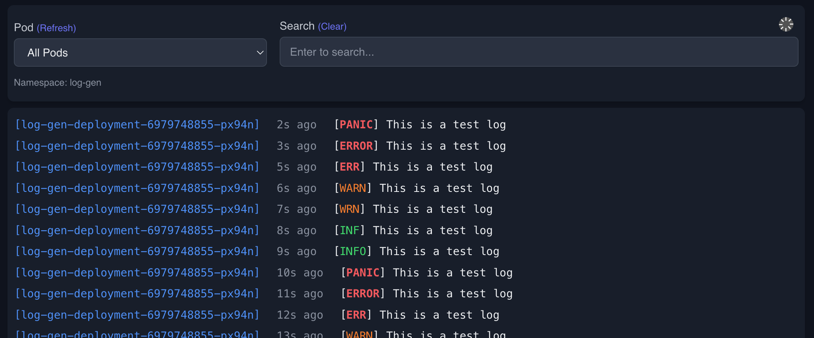

A simple Kubernetes pod log viewer web app.
Give direct log access to your software engineers to see the logs without giving them access to the kubeconfig or other centralized log tools.
This application is designed to only monitor logs of pods in the namespace it is deployed to. It can be easily adapted to view all pods in the cluster, but it may not scale well in larger environments.

Helm allows you to easily install and customize the settings.
See the readme in the helm chart for instructions.
Create the configmap:
kubectl create configmap logpilot \
--from-file=src/main.py \
--from-file=src/log_archiver.py \
--from-file=src/events.py \
--from-file=src/index.html \
--from-file=pyproject.toml \
-n YOUR_NAMESPACE
Apply the main manifest: Modify the app config. See comments on the API key usage.
kubectl apply -f k8s/ -n YOUR_NAMESPACE
Port-forward to the service:
kubectl port-forward -n YOUR_NAMESPACE svc/logpilot-service 5001:5001
The API key is designed to simply protect the UI from random users. Please use a VPN or other means to protect the app in sensitive environments.
When using an API key, you embed the key in the URL: http://localhost:5001/?api_key=your-api-key
By default, this application stores logs for all pods in the namespace it is deployed to for 7 days.
This is configurable by setting the MAX_LOG_RETENTION_MINUTES environment variable in the deployment configuration.
Or disable it by setting RETAIN_ALL_POD_LOGS=false in the deployment configuration.
When enabled:
/logs directory in the containerMAX_LOG_RETENTION_MINUTES environment variableWe welcome contributions! Please follow these guidelines when submitting a Pull Request:
git checkout -b feature/amazing-feature)Run code formatting and linting:
# Format code with ruff
uvx ruff format .
# Run ruff linter
uvx ruff check --fix .
git push origin feature/amazing-feature)Pull Request Guidelines
Testing is done with Playwright.
The tests assume that the test “log-gen” pod is running in the namespace where the app is deployed.
For detailed testing instructions, local development setup, and troubleshooting, see the Testing Guide.
To install development dependencies:
uv pip install -e ".[dev]"
To run the tests:
uv run pytest